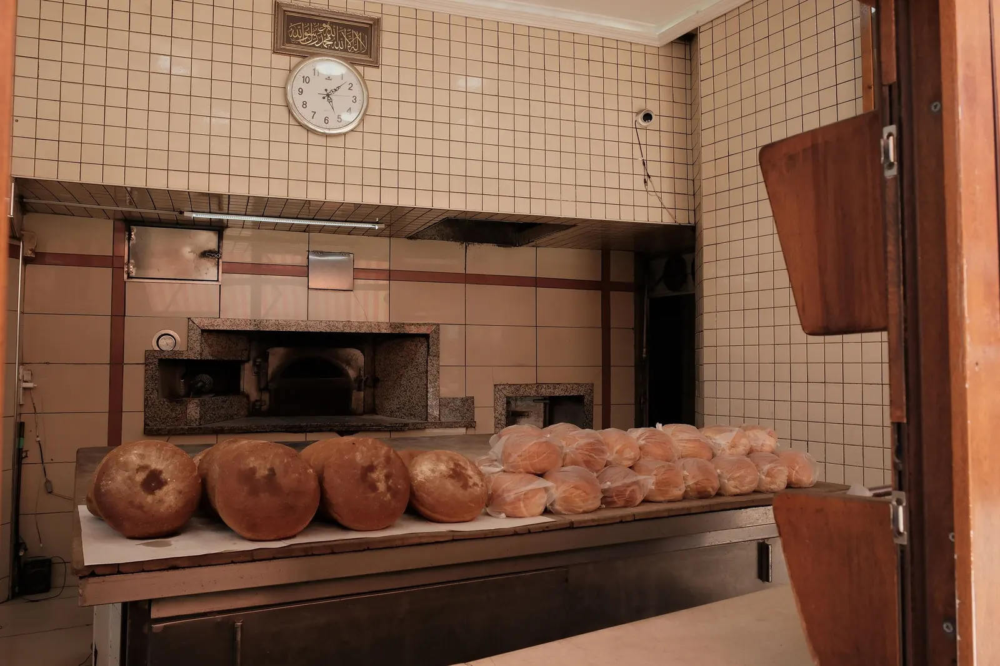
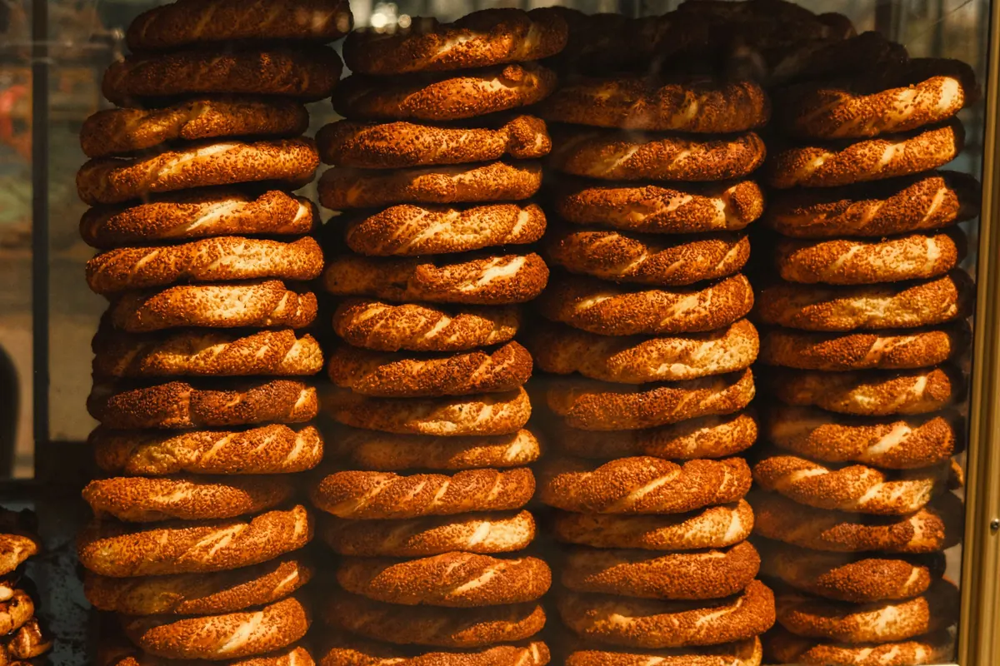
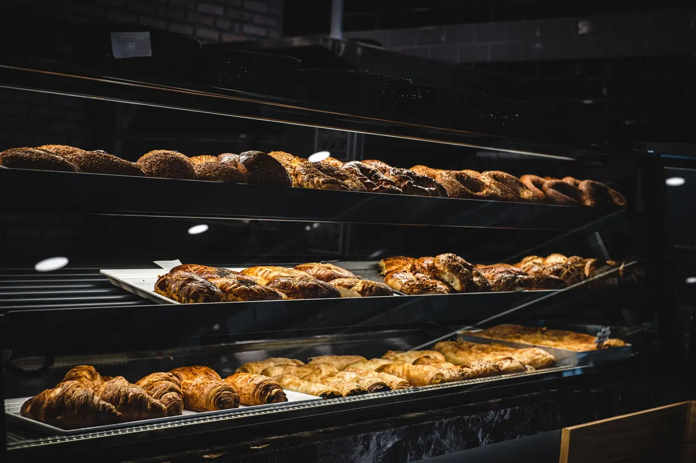
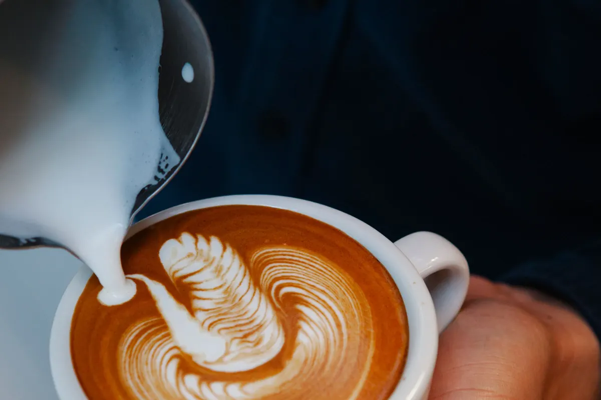

Taş fırın · kahvaltı · paket sipariş
Sıcak simit 06:30'da,
siparişiniz 25 dakikada.
Taş fırında ekmek ve simit, terasta serpme kahvaltı, akşam tatlı ve kahve. Pasta ve tepsi siparişlerini WhatsApp'tan alırız.
Taş fırın · kahvaltı · kafe · Lara
Menüden
Fiyatlar temsilîdir.
- 01Serpme kahvaltı (2 kişi)1.300 TLtemsilî
25 çeşit, sınırsız çay.
- 02Simit (adet)20 TLtemsilî
Taş fırın, susamlı.
- 03Ekşi mayalı ekmek95 TLtemsilî
750 g, günlük.
- 04Doğum günü pastası1.450 TL'dentemsilî
8–10 kişilik, 1 gün önceden.
- 05Tepsi börek (ofis)1.100 TLtemsilî
40 dilim, ofise teslim.
- 06Kahve90 TL'dentemsilî
Türk kahvesi, filtre, latte.
Fiyatlar örnek işletmeye aittir.



Hakkımızda
Fırın hakkında
Lara'da 1998'den beri taş fırın. Sabah ekmeği, öğlen börek, akşam tatlı ve kahve.
Ofis ve okul siparişlerini bir gün önceden WhatsApp'tan alıyoruz.
Ekip (örnek)
- Yusuf Ustafırın
- Gül H.pasta
- Cankafe
- Paket servis3 km içinde
Sık sorulanlar
Merak edilenler
Pasta siparişi ne kadar önce verilmeli?
En az 1 gün önceden; özel tasarımlarda 3 gün.
Paket servis var mı?
3 km içinde 25 dakikada; 500 TL üzeri ücretsiz.
Kahvaltı için rezervasyon gerekli mi?
Hafta sonu için öneririz; WhatsApp'tan masa ayırabilirsiniz.
İletişim
Bize ulaşın
- AdresGüzeloba Mah., Lara Cd. · Muratpaşa / Antalya (örnek adres)
- SaatlerHer gün 06:30–23:00
- Telefon0242 ••• •• •• (örnek)
- WhatsAppasistanı deneyin ↓